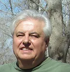

José Corrado
Nace un 18 de mayo de 1954 en Lomas de Zamora, Provincia de Buenos Aires Argentina. Maestro Mayor de Obras promoción 1972 escuela Industrial de la Nación Otto Krause, Y Arquitecto UBA promoción 1978. En ejercicio activo de la profesión en forma independiente desde hace cuarenta y cinco años, abarcó además distintas actividades que van desde la fotografía a la plástica, participando de muestras colectivas e individuales.
Autor de los siguientes libros:
- Amor al Amor: Poesía. 2002
- Pasión por la Pasión.Poesía. 2004
- Sembrador. Poesía. 2019
- Pañuelos Negros
- Pañuelos Blancos. Novela. Libro del Autor. 2019
- Veinte años de Tres. Poesía. 2010
- Tres Versos y un Juglar. Poesía. Antología. 2010
- Nosotros 4. Poesía. 2012
- Participación en el Diario de los Poetas. 2010 a 2016